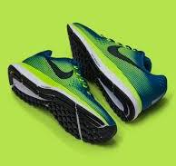
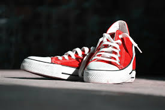

Happy Feet Shoe Spot
- Buy Shoes for Men and Women
- Buy Shoes for Kids
- Buy Sports Shoes
Best quality shoes for men and women:

Finding the best quality shoes for both men and women involves looking at factors
such as material, craftsmanship, comfort, and design. High-quality shoes are typically made from premium materials like full-grain
leather, durable synthetic fabrics, or advanced mesh, which ensure longevity and comfort. Craftsmanship plays a crucial role,
with attention to detail in stitching and construction indicating superior quality. Comfort features, such as cushioned insoles, a
rch support, and breathable linings, are essential for all-day wear. Additionally, stylish and versatile designs that cater to various
occasions and outfits are highly sought after. Renowned brands like Nike, Adidas, Clarks, and Allen Edmonds offer excellent options that
combine these elements, making them top choices for those seeking the best in footwear.
Best quality shoes for Kids:

When it comes to finding the best quality shoes for kids, it's important to prioritize comfort, durability, and support. Children's shoes should be made from high-quality materials such as soft leather, breathable mesh, or sturdy synthetics that can withstand active play. Proper cushioning and arch support are crucial to promote healthy foot development and prevent discomfort. Additionally, features like adjustable straps or laces ensure a secure fit as kids grow. Look for brands known for their commitment to quality and safety, such as Stride Rite, New Balance, and Geox, which offer a range of stylish and functional designs suitable for different activities and environments. Investing in high-quality shoes for kids ensures their feet are protected and comfortable, supporting their active lifestyles.
Best quality Sport shoes:

When seeking the best quality sports shoes, it's essential to focus on performance, durability, and comfort. High-quality sports shoes are crafted from advanced materials that provide excellent support, breathability, and flexibility, such as engineered mesh, synthetic uppers, and responsive cushioning technologies. These shoes are designed to enhance athletic performance by offering features like shock absorption, superior grip, and stability, which help prevent injuries and improve efficiency. Brands like Nike, Adidas, Asics, and Under Armour are renowned for their innovation and commitment to quality, offering specialized designs tailored to various sports, from running and basketball to soccer and tennis. Investing in top-tier sports shoes ensures that athletes can perform at their best, with the confidence that their footwear will endure rigorous use while providing maximum comfort and support.
Happy feet shoes spot,111,Murugar streets,palani.
Contact Us-9127834957